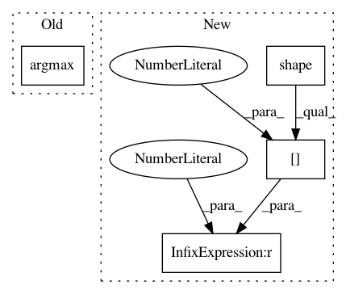

399a74dfa594ec891c1da5553394b8155f64453d,examples/FasterRCNN/modeling/model_cascade.py,CascadeRCNNHead,match_box_with_gt,#CascadeRCNNHead#Any#Any#,79
Before Change
with tf.name_scope("match_box_with_gt_{}".format(iou_threshold)):
iou = pairwise_iou(boxes, self.gt_boxes) // NxM
max_iou_per_box = tf.reduce_max(iou, axis=1) // N
best_iou_ind = tf.argmax(iou, axis=1) // N
labels_per_box = tf.gather(self.gt_labels, best_iou_ind)
fg_mask = max_iou_per_box >= iou_threshold
fg_inds_wrt_gt = tf.boolean_mask(best_iou_ind, fg_mask)
After Change
with tf.name_scope("match_box_with_gt_{}".format(iou_threshold)):
iou = pairwise_iou(boxes, self.gt_boxes) // NxM
max_iou_per_box = tf.reduce_max(iou, axis=1) // N
best_iou_ind = tf.cond(tf.shape(iou)[1] > 0,
lambda: tf.argmax(iou, axis=1), // //proposal, each in 0~m-1
lambda: tf.zeros([tf.shape(iou)[0]], dtype=tf.int64))
labels_per_box = tf.gather(self.gt_labels, best_iou_ind)
fg_mask = max_iou_per_box >= iou_threshold
In pattern: SUPERPATTERN
Frequency: 3
Non-data size: 4
Instances
Project Name: tensorpack/tensorpack
Commit Name: 399a74dfa594ec891c1da5553394b8155f64453d
Time: 2020-04-11
Author: ppwwyyxxc@gmail.com
File Name: examples/FasterRCNN/modeling/model_cascade.py
Class Name: CascadeRCNNHead
Method Name: match_box_with_gt
Project Name: tensorpack/tensorpack
Commit Name: 999846b2763b60f70df53f5844ef07857cf5f5aa
Time: 2019-07-16
Author: ppwwyyxx@users.noreply.github.com
File Name: examples/FasterRCNN/modeling/model_frcnn.py
Class Name:
Method Name: sample_fast_rcnn_targets
Project Name: ntucllab/libact
Commit Name: e81142f0869321cd8792e13bfc4f6fb85d9f1efc
Time: 2015-12-22
Author: yangarbiter@gmail.com
File Name: libact/query_strategies/uncertainty_sampling.py
Class Name: UncertaintySampling
Method Name: make_query